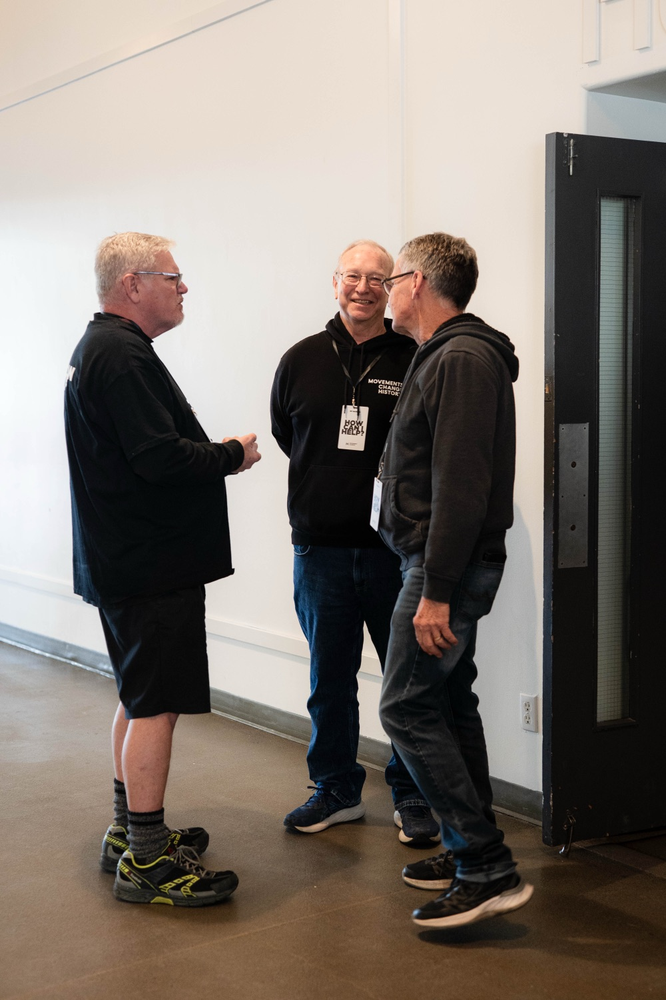

Join a team
Getting involved is one of the best steps you can take. When you serve, you’re not only building relationships and finding community — you’re becoming part of what God is doing through our church. It’s a powerful way to grow in your faith and make a real impact in the lives of others.

Ten ways to serve
Connections
You’re the first impression people receive at Movement Church. Whether it’s parking, greeting, serving in the café, or ushering — you help create a warm and welcoming environment that sets the tone for Sundays and Wednesday nights.
Kids
Our Kids Ministry is all about planting seeds of faith in the next generation. Serve on Sunday mornings by creating a fun, safe, and meaningful space where children can learn about Jesus in ways they’ll remember forever.
More infoYouth
Join the Movement Youth team and make a real impact in the next generation! Serve every Wednesday as we lead, mentor, and inspire students to grow in faith, fun, and community.
More infoWorship
Are you gifted musically — vocally or instrumentally? Our Worship Team is always looking for talented and passionate individuals who feel called to lead others into the presence of God through music and praise.
Production
In today’s digital age, our online and in-person experiences are deeply connected. Join the Production Team to run cameras, lighting, audio, or slides — helping ensure each experience is excellent and accessible to all.
Special Events
From conferences and parties to outreach and celebrations, we go all out. If you’re organized, love planning, or just enjoy rolling up your sleeves to help things run smoothly, this is a great place to serve and make big things happen.
Local Missions
Be the hands and feet of Jesus in Oxford County. Whether it’s handing out care packages, running community nights, or serving those in need — the Local Missions team is all about practical love and real impact.
Maintenance
Got skills in repairs, construction, or just love fixing things? From lightbulbs and painting to bigger projects like drywall or renos — the Maintenance Team helps keep our facilities safe, functional, and beautiful.
Finances
Our Finance Team plays a vital behind-the-scenes role in making ministry happen. If you’re detail-oriented, trustworthy, and passionate about stewarding resources well, this team helps ensure everything runs with excellence.
Leadership
Do you feel a call to lead? Whether it’s launching a small group, mentoring others, or serving in a leadership capacity like our board, this team is for those ready to step into a deeper level of responsibility and spiritual impact.
You were made for community
Be a part of what God’s doing. Tell us where you’d like to serve and someone will connect with you.